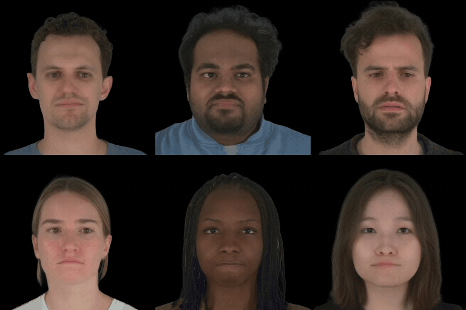
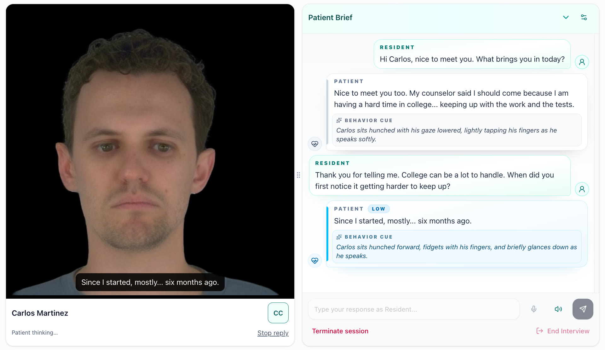
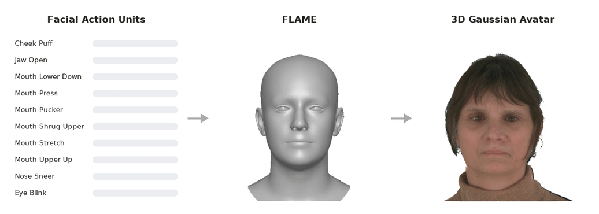

Hello! I recently completed my Master's degree at Visual Media Lab, KAIST, advised by Prof. Junyong Noh.
I am currently a Visiting Researcher at DGP Lab, University of Toronto.
My research interests lie in Computer Graphics and Computer Vision, particularly focusing on Facial Animation and Digital Avatars.
I am passionate about deriving meaningful insights and results through the use of geometric data.
I'm always happy to discuss research ideas and potential collaborations.
Outside of research, I also like taking photos.
News
Aug 2026
1 paper has been accepted to IEEE TVCG.
Aug 2026
Started as a Visiting Researcher at DGP Lab, University of Toronto.
Visual Media Lab
Student Researcher (Advisor: Junyong Noh)
Mar 2024 - Feb 2026
Projects

Aug 2026 - Ongoing
An interactive, audio-driven digital patient that converses with trainee physicians in clinical interview practice, conveying patient-specific emotion and symptoms through photorealistic facial expression and gaze.

A psychiatry trainee talks with the avatar patient, whose replies come with behavior cues.
Psychiatric trainees need realistic virtual patients to practice clinical interviews.
To feel like talking with a real patient, the avatar is photorealistic and responds in real time.
Given a patient's response from a dialogue system, the avatar speaks it as a photorealistic 3D talking face,
while remaining controllable per patient, e.g., reduced eye contact or blunted affect as symptoms of a condition.
It will be used for psychiatric interview training.

Text
Audio
AUs
FLAME params
Video
Emotion label
Speech: Gemini TTS, prompted with a per-patient voice and the emotion label.
Expression: LAM_Audio2Expression predicts 52 ARKit blendshapes at 30 fps,
used as FACS-style action units (AUs).
Patient & Emotion Control: Per-patient AU edits based on written clinical case studies,
grounded in the FACS-based terms clinicians use to describe affect, with per-response emotion edits layered on top.
Rendering: AUs are linearly mapped to FLAME parameters driving
GAGAvatar, a generalizable 3D Gaussian head avatar, fine-tuned per identity on
16-camera NeRSemble captures to recover identity detail beyond its one-shot reconstruction.
The system includes 25 avatars covering 87 patient case profiles from the training curriculum
(e.g., major depressive disorder, first-episode schizophrenia, delirium).
Below, one avatar speaks in six emotional states in turn, with each emotion applied to the AUs on top of the speech-driven motion.
Generating Hyper-Realistic to Extremely-stylized Face Avatar with Varied Speech Speed and Context-based Emotional Expression
Sep 2024 - Feb 2026
Development of customizable AI avatars that generate responsive, conversational facial animations, enabling lifelike interaction and feedback through intuitive user inputs.